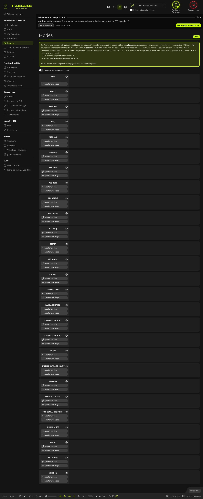
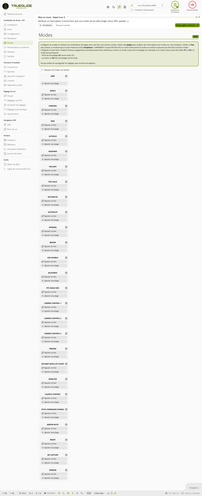

TRUE
TRUEModes
L'onglet Modes (groupe « Installation du drone ») sert à attribuer les interrupteurs de la radio aux modes de la carte : armement, mode ANGLE, retour GPS, mode SPEEDER de TRUEGLIDE, etc. Un mode s'active quand la voie AUX choisie est dans la plage réglée.


Plages et liens
- Une plage relie un mode à une voie AUX : le mode est actif quand la valeur de la voie est entre le minimum et le maximum.
- Un lien active un mode quand un autre mode est actif.
- Exceptions : ARM ne peut pas être lié à un autre mode, dans un sens comme dans l'autre, et on ne peut pas lier un mode à un mode qui est lui-même un lien.
- Un mode peut avoir plusieurs plages ou liens. Chacun est alors marqué ET ou Ou : le mode est actif si toutes les entrées ET sont actives, ou si au moins une entrée Ou est active.
La liste des modes
Chaque mode a une case à gauche avec son nom, un ? d'aide et deux boutons :
- Ajouter un lien (absent pour ARM) : ajoute un menu pour choisir le mode lié (Aucun par défaut).
- Ajouter une plage : ajoute une plage, de 1300 à 1700 au départ.
Pour chaque plage :
- menu de la voie : AUTOMATIQUE ou AUX 1, AUX 2… En AUTOMATIQUE, basculez l'interrupteur voulu sur la radio : le logiciel choisit la voie AUX qui a bougé (d'au moins 100 µs) ;
- curseur à deux poignées, de 900 à 2100 µs, par pas de 25. Un repère montre la position actuelle de la voie ;
- Minimum et Maximum : valeurs de la plage, en µs ;
- la croix en haut à droite supprime la plage (ou le lien).
Couleur de la case du mode : en couleur vive quand le mode est actif, en rouge avec « (DÉSACTIVÉ) » quand l'interrupteur ARM est levé alors que l'armement est bloqué (voir Paramètres empêchant l'armement dans l'onglet Installation).
Masquer les modes non utilisés : n'affiche que les modes qui ont au moins une plage ou un lien. Le choix est gardé d'une session à l'autre.
Attribuer un interrupteur
- Hélices retirées, radio allumée, récepteur fonctionnel (vérifié dans l'onglet Récepteur).
- Sur la ligne du mode, cliquez Ajouter une plage.
- Laissez la voie sur AUTOMATIQUE et basculez l'interrupteur voulu : la voie AUX se choisit seule. Ou choisissez-la dans le menu.
- Basculez l'interrupteur dans la position qui doit activer le mode, et placez les poignées du curseur autour du repère.
- Vérifiez : la case du mode change de couleur quand l'interrupteur est dans la bonne position, et seulement là.
- Cliquez Enregistrer en bas à droite. Les modes sont enregistrés dans la carte, sans redémarrage.
Modes courants
| Mode | Effet |
|---|---|
| ARM | Arme la carte : les moteurs peuvent tourner. |
| PREARM | À l'armement, la carte attend que cet interrupteur soit aussi actif (armement en deux temps). |
| ANGLE | Mode stabilisé : les manches commandent l'inclinaison, manches au centre = drone à plat. |
| HORIZON | Comme ANGLE manches au centre, de plus en plus acro quand les manches s'en éloignent. |
| AIR MODE | Garde la stabilité gaz à zéro. Absent de la liste si AIRMODE est activé en permanence (onglet Configuration). |
| GPS RESCUE | Retour vers le point d'armement. Présent si la fonction GPS est active. |
| ALTHOLD, POS HOLD | Maintien d'altitude, maintien de position. |
| AUTOPILOT, WP CAPTURE | Missions GPS : seulement avec les firmwares de navigation (TRUENAV, TRUENAV_LIGHT) et le simulateur. Voir Plan de vol. |
| FAILSAFE | Déclenche à la main l'étape 2 du failsafe. |
| BEEPER, BEEPER MUTE | Fait sonner le buzzer (retrouver un drone tombé) ; coupe le buzzer. |
| FLIP OVER AFTER CRASH | Inverse les moteurs pour retourner le drone sur le dos (DShot nécessaire). |
| FPV ANGLE MIX | Utilise l'Angle Caméra FPV de l'onglet Configuration. |
| BLACKBOX | Enregistrement du journal de vol. |
| OSD DISABLE | Masque l'OSD. |
| PARALYZE | Bloque le drone jusqu'à ce qu'on coupe l'alimentation. |
Le mode SPEEDER (TRUEGLIDE)
Mode ajouté par le firmware TRUEGLIDE, pour les drones « speeder » qui décollent fuselage vertical et volent vite fuselage presque horizontal.
- Il apparaît dans la liste seulement si la carte a un accéléromètre.
- Il ne marche qu'en mode ANGLE : mettez aussi ANGLE sur un interrupteur.
- Interrupteur actif : le nez descend progressivement jusqu'à l'angle de croisière. Interrupteur coupé ou failsafe : retour progressif au stationnaire. GPS RESCUE, ALTHOLD et POS HOLD annulent la transition.
- Sans interrupteur sur SPEEDER, rien ne change en vol.
- Les réglages (angle de croisière, vitesse de transition) sont dans l'onglet Speeder.